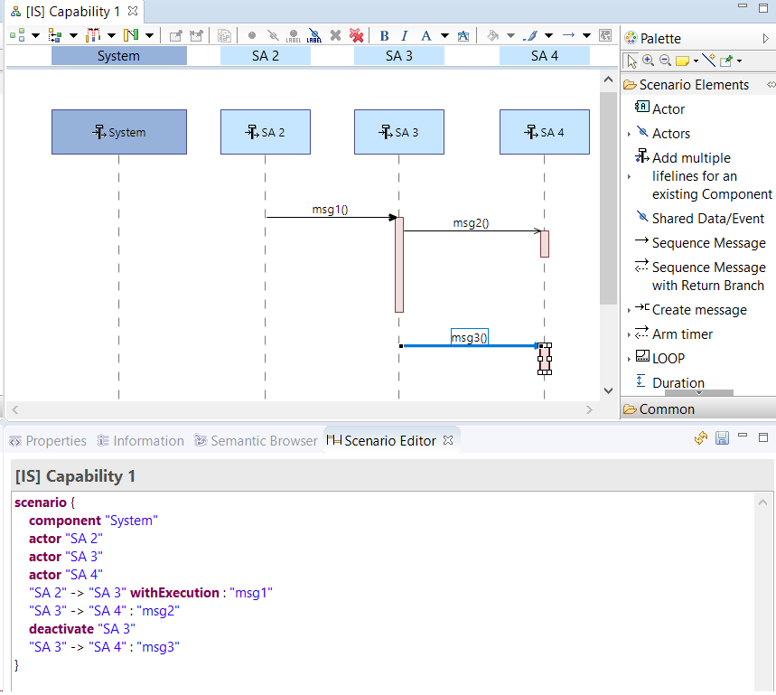

Introduction
Textual Scenario Editor is an addon that allows to edit Capella Scenarios in textual mode. The addon allows the user to use a simple language to write the scenarios in textual mode and enables two-way synchronization between the textual scenario and the diagram.
Features introduced in Textual Scenario Editor
- Simple language based on Capella semantic with a mapping as close as possible with PlantUML in order to import later PlantUML scripts within Capella
- Textual edition of Capella scenarios
- Propose auto-completion (CTRL+Space) of Capella elements.
- Textual edition managing error detection (e.i invalid Capella model: e.g. non existing target role of specified lifeline)
- Synchronization between textual edition and scenario display
